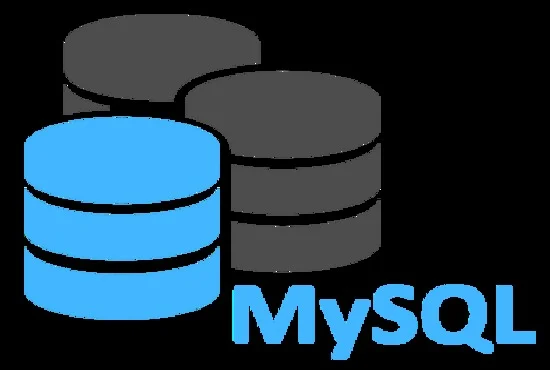

Hi, My name is
Ganesh Sonune
and I am a passionate

Work Experience
HTML,Css,Js & Php Developer (2022-2023)
- 🔹 HTML Skilled in writing clean, semantic, and SEO-friendly HTML code to build structured web page layouts. Proficient in using HTML5 tags for forms, media, and tables to ensure a well-organized structure.
- 🔹 CSS Experienced in designing responsive and visually appealing interfaces using CSS. Familiar with Flexbox, Grid, media queries, and animations to create layouts that work smoothly across all devices.
- 🔹 JavaScript Hands-on experience with vanilla JavaScript to develop interactive and dynamic web functionalities. Skilled in DOM manipulation, form validation, event handling, and creating user-friendly UI behavior.
- 🔹 PHP Language Skilled in building dynamic and server-side web applications using PHP. Experienced in handling form data, managing sessions, working with MySQL databases, and developing CRUD-based systems. Familiar with integrating PHP with HTML/CSS and using procedural as well as basic object-oriented PHP for scalable application development. Projects (Using HTML, CSS, JavaScript, PHP)
- 1. Registration Form ➤ A fully functional and responsive registration form with real-time input validation using JavaScript. (Features: Input validation, clean layout, mobile-friendly design)
- 2. CGPA Calculator ➤ A dynamic tool that calculates CGPA based on user inputs. Built using JavaScript logic and styled with responsive CSS. (Features: Input-based calculation, real-time result display, clean UI)
- 3. Music Player Web App ➤ An interactive music player with play/pause, next/previous, seek bar, and volume control using JavaScript. (Features: Audio control, custom UI, responsive layout)
- 4. 📋 Feedback Collection App ➤ Developed a feedback system for collecting user reviews and storing them in the database for analysis. (Features: Form submission, database connectivity, admin review panel)
- 5. 📊 Basic Admin Dashboard ➤ Created an admin panel using PHP to view, update, and delete user records from the database. (Features: Authentication system, MySQL integration, CRUD operations)

Mysql & C lang Developer (2022-2023)
🔹 MySQL
Experienced in designing and managing relational databases using MySQL. Proficient in writing
optimized SQL queries for data retrieval, insertion, updating, and deletion. Familiar with
database normalization, relationships (one-to-many, many-to-many), and indexing for performance
optimization. Comfortable with using MySQL in integration with web applications (via PHP, Flask,
or Node.js).
-
Projects Involving MySQL
- 1. User Registration System ➤ Built a secure user registration form using HTML, CSS, JavaScript, and connected it to a MySQL database for storing user details. (Features: Form validation, data insertion, error handling)
- 2. CGPA Calculator with Database Storage ➤ Extended the CGPA calculator by storing student details and their results in MySQL for record keeping and later retrieval. (Features: Data insert/retrieve, structured tables for students & results)
- 3. Music Player with Playlist Storage ➤ Created a music player app where song data (title, artist, path) is stored and fetched from a MySQL database. (Features: Dynamic content loading from DB, CRUD operations on playlist)
- 🔹 C Language Strong foundation in C programming, including data types, control structures, arrays, strings, functions, pointers, and memory management. Able to build logic-driven programs with a focus on performance and efficiency. Familiar with file handling, recursion, and basic data structures such as stacks, queues, and linked lists.
- Projects Using C Language
- 1. Student Management System ➤ Developed a console-based application in C to add, search, update, and delete student records using file handling. (Features: CRUD operations, file storage, user-friendly menu interface)
- 2. CGPA Calculator (Console App) ➤ Created a C-based program to calculate CGPA using arrays and loop logic based on user-entered subject marks. (Features: Clean logic, input validation, real-time result generation)
- 3. Bank Management System (Basic) ➤ Simulated a simple banking system with features like account creation, deposit, withdrawal, and balance checking using file handling in C. (Features: Menu-driven, secure data management via text files)
C++ & Java Developer (2023-2024)
- 🔹 C++ Language Proficient in object-oriented programming (OOP) using C++. Strong understanding of core concepts such as classes, objects, inheritance, polymorphism, encapsulation, and abstraction. Skilled in using STL (Standard Template Library), file handling, and writing efficient algorithms for problem-solving. Familiar with implementing data structures and basic algorithms in C++.
- Projects Using C++
- 1. Library Management System ➤ Developed an object-oriented console-based application to manage book records, user details, and issue/return status. (Features: Class-based design, file storage, search & update operations)
- 2. Student Report Card Generator ➤ Created a program that generates and stores student report cards using classes, file handling, and constructors. (Features: Grade calculation, data entry, persistent storage via files)
- 3. Simple Calculator Using OOP ➤ Designed a calculator using classes and functions to perform arithmetic and scientific operations. (Features: Menu-driven, modular code with constructor overloading)
- 🔹 Java Language
- Proficient in object-oriented programming using Java. Strong understanding of core Java concepts including classes, objects, inheritance, polymorphism, encapsulation, and abstraction. Experienced in building console-based applications, using exception handling, file I/O, collections framework, and multithreading. Familiar with GUI development using Java Swing and JDBC for database connectivity.
- Projects Using Java
- 1. Student Management System ➤ Developed a console-based application to add, delete, update, and search student records. (Features: OOP-based structure, file handling, menu-driven interface)
- 2. Simple Banking System ➤ Built a secure banking system in Java to perform basic operations like deposit, withdrawal, balance inquiry, and mini statement. (Features: Class-based structure, transaction history, input validation)
- 3. CGPA Calculator (Java Console App) ➤ Created a CGPA calculator where users can enter marks/grades, and the system calculates and displays the CGPA. (Features: Efficient logic, input handling, user-friendly output)
- 4. Login System with File Storage ➤ Designed a basic login/signup system where user data is stored and validated using file I/O in Java. (Features: Authentication logic, secure data storage using file handling)
Python & Flask Developer (2024-2025)
- 🔹 Python Language
- Proficient in Python programming with hands-on experience in automation, scripting, API integration, and bot development. Strong understanding of core Python concepts like data types, control structures, functions, file handling, error handling, and OOP. Comfortable with libraries such as requests, os, time, telebot, tkinter, and working with external APIs, automation, and task scheduling.
- Projects Using Python
- 1. 📈 YouTube Watchtime Booster ➤ Developed an automation tool that simulates watch-time activity on YouTube to help improve video analytics. (Features: Video loop automation, time control, GUI interface with Tkinter)
- 2. 📨 Temporary Mail Generator (Telegram Bot) ➤ Built a Telegram bot that generates temporary email addresses and fetches real-time inbox messages using third-party APIs. (Features: API integration, telebot usage, message fetching, user interaction via Telegram)
- 3. 📂 YouTube Video Management App ➤ Designed a desktop app to organize and manage YouTube video details like title, tags, thumbnails, and publishing status. (Features: GUI with Tkinter, local storage, user-friendly interface)
- 4. 🤖 ChatBot (Console-based) ➤ Created an AI-based chatbot using Python that responds to user input and simulates human-like conversation. (Features: Rule-based logic, text analysis, conversation loop)
- 5. 🗂 File Organizer Tool ➤ Built a Python script to automatically organize files in folders based on file type, extension, or date. (Features: File system access using os, shutil, automation of folder structure)
- 🔹 Flask
- Experienced in building lightweight and scalable web applications using Flask. Proficient in routing, Jinja2 templating, form handling, and integrating with MySQL/SQLite databases. Comfortable with creating RESTful APIs, handling POST/GET requests, using Flask-WTF for form validation, and building dynamic frontends using HTML/CSS with backend Python logic.
- Projects Using Flask
- 1. 📝 Mock Test Web App ➤ Developed a full-stack web application for online mock tests using Flask. It allows users to take tests, submit answers, and get evaluated instantly. (Features: User sessions, question navigation, score calculation, data storage in MySQL)